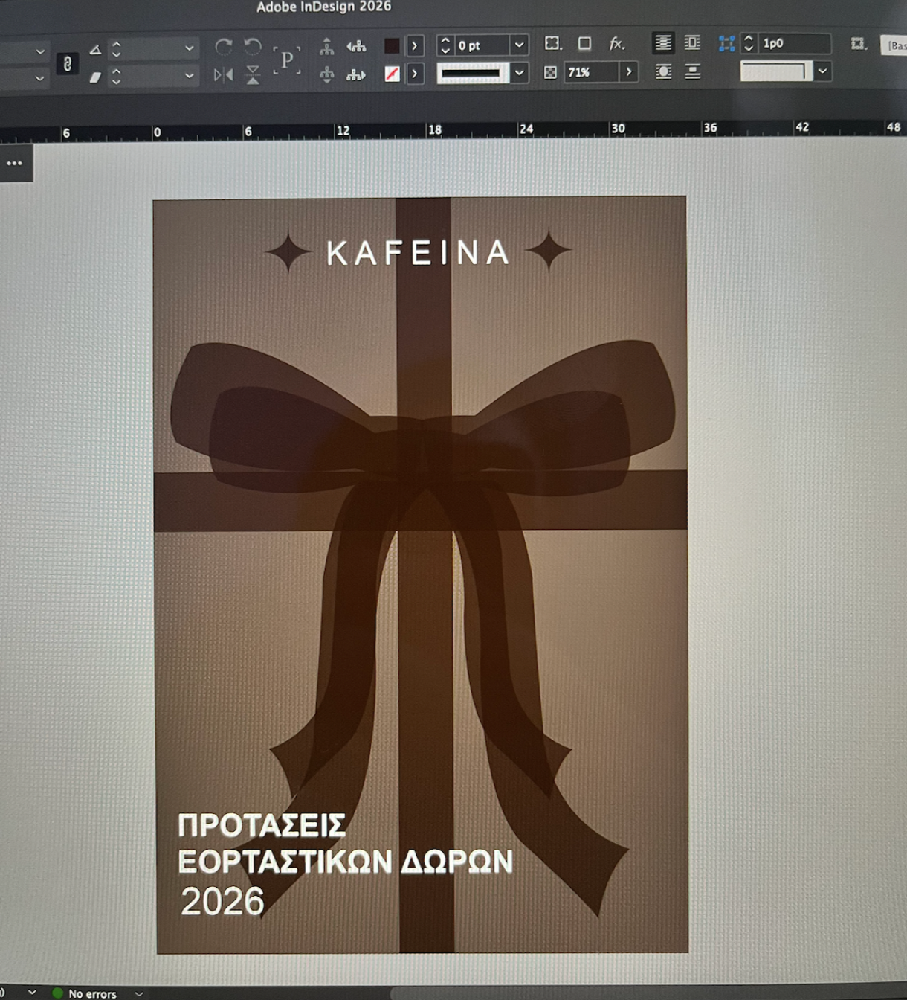
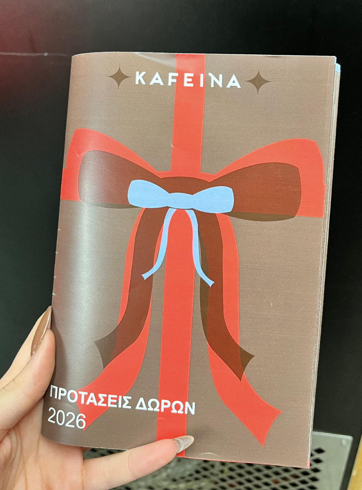
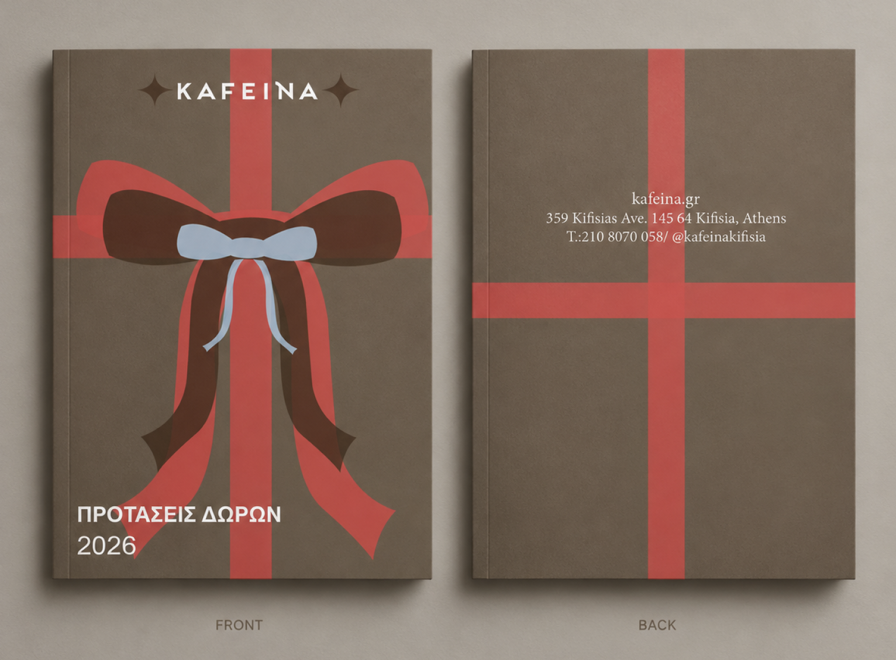
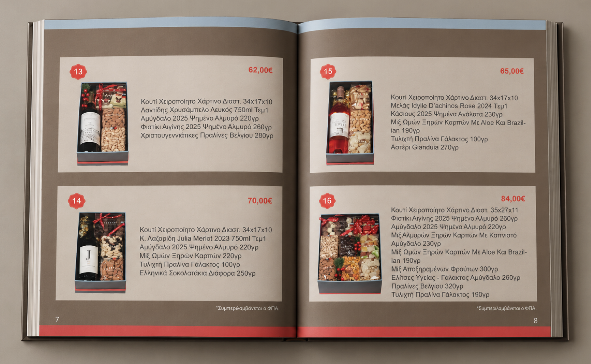
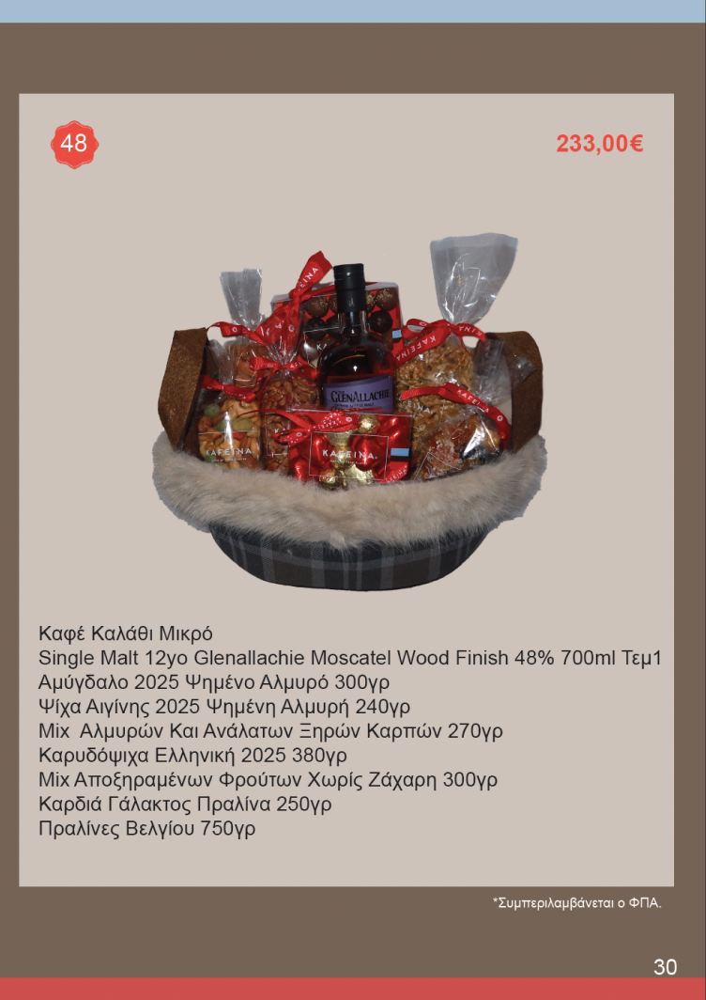
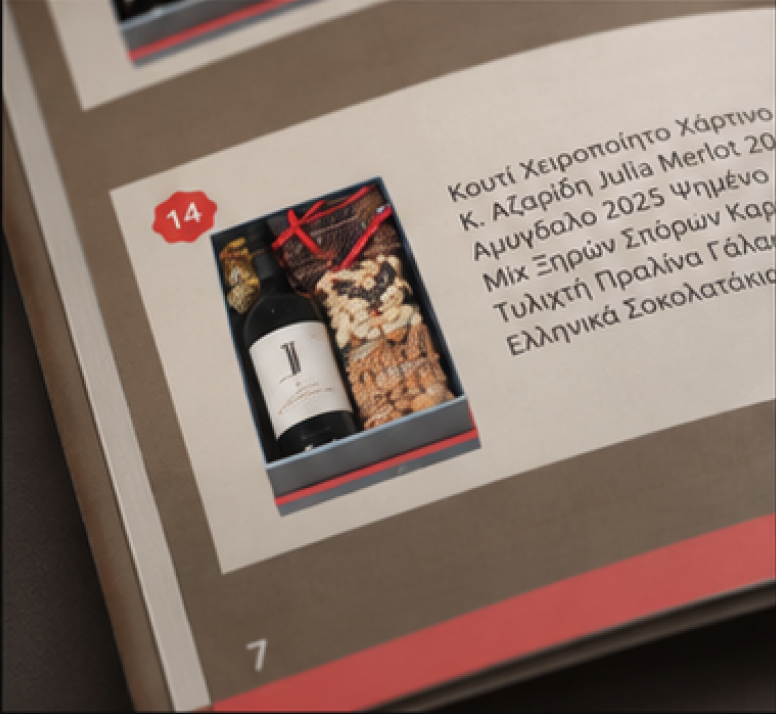
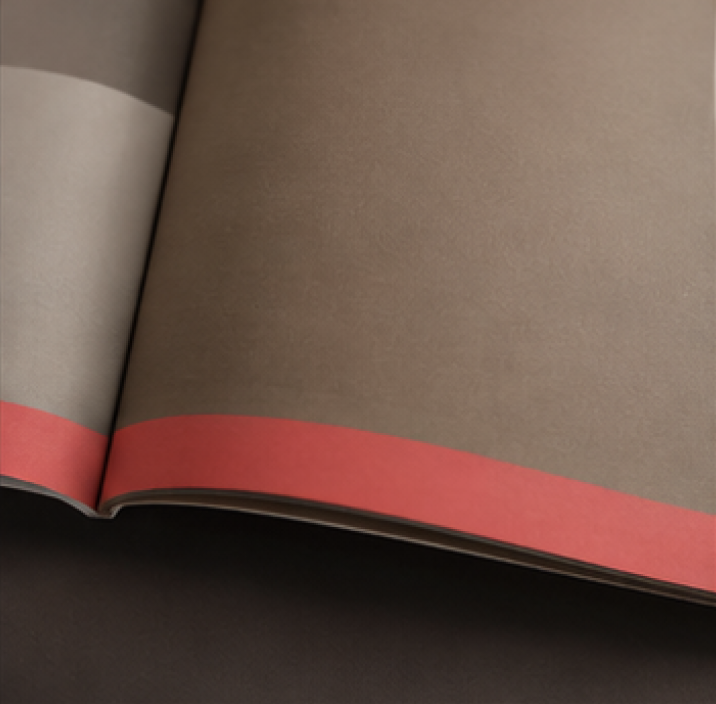
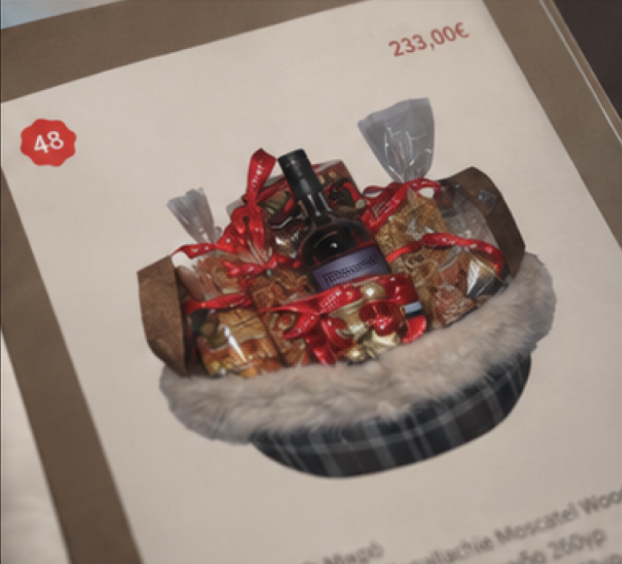

PROJECT 04
KAFEINA
Editorial Design | Print

INTRODUCTION
A seasonal gift catalogue designed for Kafeina, a local café offering curated holiday gift baskets.
The project focused on creating a warm and festive editorial system while working within the brand’s existing visual language. The design combines structured product information with a more expressive cover and packaging-inspired visual direction.
THE CONCEPT
The catalogue was designed around the idea of the gift itself, using ribbon-inspired forms to connect the cover, typography and internal pages.
EARLY DIRECTION
FINISHED PRODUCT

EDITORIAL SYSTEM
Inside, the visual language becomes more structured, prioritising clear product information while maintaining the colour, typography and graphic elements established on the cover.





END